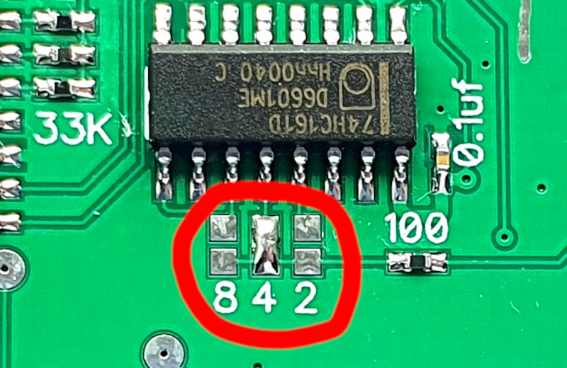

GamePad Turbo


Заміна оригінальної та не дуже плати геймпаду для Фамікому або Дендіклону.
Телефон для зв'язку (Viber/Telegram): +380992028599
Придбати можна в 3х варінтах:
1 - Тільки платка, інше все маю (50грн)
2 - Зберу сам (100грн)

3 - Жека роби, сам не здужаю (150грн)
Куди можна встановити:
Оригінальний Famicom:
Оригінальна NES, Але одного отвіру не вистачає, буде виправленно на нових моделях:
Dendy Junior:
Вбудовані Dendy Junior:
Червоний клон фамікому:
Golden China:
Hitex:
Новоробний Simbas:
Сюбор:
А що там за 8-4-2?

Це налаштування турбо кнопок (дільник), по замовченню рекомендовано обирати 2. Кожні 2 опитування геймпаду буде мінятися "натискання" турбо кнопки. В залежності від гри опитування геймпаду відбуваеться 1-2 рази за кадр. Чим більший обран дільник, тим менша швидкість турбо кнопок. Дільник "1" обирати неможливо, бо це може призвести до зависання або відмови управління.
Ну а як під'єднати?
Для цього знадобиться мультіметр. Перевіряемо який дріт куди під'єднан, та запаюємо.